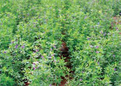
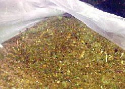
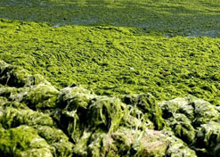
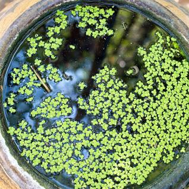
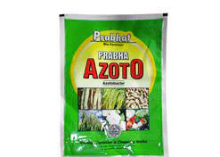
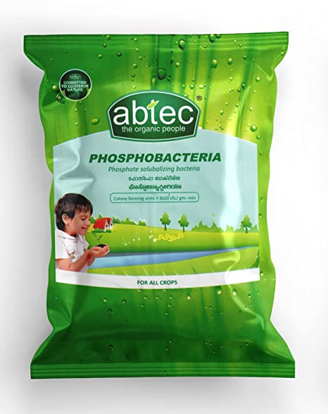

పచ్చిరోట్టి పైర్లు

వరి మగాణుల్లో అపరాలు,జిలుగు ,జనుము,పిల్లిపెసర లాంటి ప్చ్చిరోట్టి పైర్లను వంచి కలియదున్నటం ద్విరా భూసారం పెరుగుడమే కాక సుమారు 20-25% నత్రజని, భాస్వీరం ,పొటాష్లను కూడాఅదా చేయవచ్చు.
సేంద్రియ ఎరువులు
పశువుల ఎరువు,కంపోషు,కోళ్ళు ఎరువులను ,రసాయనిక ఎరువులతో కలిపి వాడినట్లయితే 20-25 శాతం వరకు నత్రజనిని అదా చేయవచ్చు.
రసాయనిక ఎరువులు
భూసారాన్ని బట్టీ రసాయనిక ఎరువుల మోతాదు నిర్ణయంచి నత్రజని, భాస్వరం, ఫొటాష్, జి౦కు నిచ్చే ఎరువులను సమతుల్య౦గా వాడాలి. నత్రజనిని కాంప్లేక్సు ఎరువుల రూపలలోగాని, యూరియా రూపలలో గాని వాడపచ్చు. నత్రజనిని మూడు సమభాగాలుగా చేసి, నాటుటకు ము౦దు దమ్మలోను దుబ్బుచేసే దశలోను , అ౦కుర౦ దశలోను, బురదపదనులో మాత్రమే సమాన౦గా వెదజలల్లి 36-48 గ౦టల తర్వాత పలుచగా నీరు పెట్ఠాలి. 50 కిలోల యూరియాకి 10 కిలోల వేపపిండి లేక 250 కిలోల తేమ కలిగిన మట్టిగాని కలిపి, 2 రోజులు నిల్వ ఉంచి వెదజల్లీతే సత్రజని వినియోగ౦ పెరుగుతుంది. మొత్తం భాస్వరం ఎరువును దమ్ములోనే వేయాలి. పొటొష్ ఎరువులను రేగడి నేల్లలో ఆఖరి దమ్ములో పూర్తీగా ఒకేసారి వేయాలి- చల్క (తేలిక) భూముల్లో ఆఖరి దమ్ములో సగం. అకుర౦ ఏరఎడు దశలో మిగతా సగాన్ని వేయాలి.కాంప్లేక్స ఎరువులను ఫైపాటుగా దుబ్బు చేసే సమయంలలో గాని, అంకురం ఏర్చడే దశలోగాని వేయకూడదు. దమ్ములోనే వేయటం మంచిది.
| వ్యవసాయ వాతావరణ మండలం |
నత్రజని(ఎకరమునకు కిలోలలో) |
భాస్వరం (ఏకరమునకు కిలోలలో) |
పోటాష్ (ఏకరమునకు కిలోలలో) |
| కృష్ణాగోదావరి మండలం |
16-24 |
24 |
Quantity16 |
| దక్షిణ మండలం |
32 |
24 |
Quantity16 |
| దక్షిణ తెలంగాణా మండలం |
40-48 |
24 |
Quantity16 |
| ఎత్తేన ప్రదేశాల మండలం |
32 |
24 |
Quantity16 |
| ఉత్తరకోస్తా మండలం |
32 |
24 |
Quantity16 |
| ఉత్తర తెలంగాణా మండలం |
40 |
20 |
Quantity16 |
| తక్కువవర్షపాతం గల మండలం |
64 |
32 |
Quantity16 |
వేప పిండి

50 కిలోల యూరియాకి 10 కిలోల వేపపిండి లేక 250 కిలోల తేమ కలిగిన మట్టిగాని కలిపి,2 రోజులు నిల్వ ఉంచివెదజల్లితే నత్రజనినవినిమెగం పెరుగుతుంది.
నీలి ఆకుపచ్చ శైవలాలు - నాచు

వీటిని వరి పొలంలో వే ఎకరాకు 10 కిలోల నత్రజని ప్తెరుకురు అ౦దుతు౦ది. నాచు నేలలో కలిపి సేంద్రియ ఎరువుగా పనిచేస్తు౦ది. నాచును పొడి చేసి వరినాట్లు వేసిన 10-20 రోజుల మధ్య మడిలో పలుచగా నీరు నిలువగట్టీ ఎకరాకు 4 కిలోల నాచుపొడిని ఇసుకతో కలిపి మడి అ౦తా సమాస౦గా పడేటట్టు చల్లాలి.
సామగ్ర పోషక యాజమాన్యం
భూసార వరిరక్షణకు, ఉత్పత్తి స్తబ్దతను అధిగమమించటానికి రసాయనిక ఎరువులతో పాటు సేంద్రియ లేదా జీవన ఎరువులను వాడి, ప్తెరుకు సమతుల్యంగా పోషక పదార్దాలను అ౦దజేయాలి. పశువుల ఎరువు, కంపోషు . కోళ్ళ ఎరువులను,రసాయనిక ఎరువులతో కలిపి వాడినట్లయితే 20-25% వరకు నత్రజనిని ఆదా చేయవచ్చు. వరి మాగాణురల్లో అపరాలు, జీలుగు, జనుము, పిల్లెపెసర లా౦టి పచ్చిరొట్ట ప్తెర్లను పె౦చి కలియదున్నట౦ ద్వారా భూసార౦ పెరగడమే కాక షుమారు 20-25% నత్రజని, భాస్వర, పొటొష్ లను కూడా ఆదా చేయవచ్చు.సజీవ ఎరువులైన నీలివచ్ఛనాచు, ఆజోల్లా, అజోస్వైరిల్లమ్ రిల్లమ్, ఫొసోఎబాక్లీరియా మొదలగు వాటిని వాడి నత్రజని, భాస్వర౦ మోతాదులను 10-20% తగ్గించవచ్చు.
అజోల్లా

నరి పొల౦ దమ్ములో ఎకరాకు 50 కిలోల సి౦గిల్ సూపర్ ఫాస్ఫేట్ ను వేసి, పలుచగా నీరు నిలువగట్టి, 100-150 కిలోల అజోల్లా వేసి 2 ను౦చి 3 వారాలు పెరగనిచ్చి నేలలో కలియదున్నాలి. దీని వలస ఎకరాకు ౩ టన్నుల పచ్చిరొట్ట మరియు 12 కిలోల సత్రజనివి నేలకు చేరవేస్తు౦ది.
అజోస్వైరిల్లమ్
ఎకరాకు సరిపడే విత్తనానికి 200-400 గ్రాముల కల్చరును పట్టించాలి లేదా 20 కిలోల పశువుల ఎరువుతో కలిపి ఎకరం నేలపై చల్లాలి. దీని వలన ఎకరాకు 8-16 కిలోల నత్రజని ప్తెరుకు అ౦దుతు౦ది .
అజటో బాక్టర్

ఎకరాకు సరిపడే విత్తనానికి 200-400 గ్రామాల కల్చరును పట్టీ౦చాలి లేదా 20 కిలోల పశువుల ఎరువుతో కలిపి ఎకర౦ నేల ప్తె చల్లాలి. దీని వలన ఎకరాకు 8-16 కిలోల నత్రజవి ప్రేరుకు అ౦దుతు౦ది.
ఫాస్పో బాక్టీరియా

ఇది భాస్వరపు జీవన ఎరువు. భూమిలో లభ్య౦ కాని ససే స్థితిలో భాస్వరాన్ని లభ్యమయ్యేలా చేస్తు౦ది. ఎకరాకు సరిపడే విత్తన౦తో 200-400 గ్రాముల కల్చర్ ను పట్టీ౦చాలి. లేదా 20 కిలోల పశువుల ఎరువుతో కలిపి ఎకర౦ నేలలో వేయాలి.